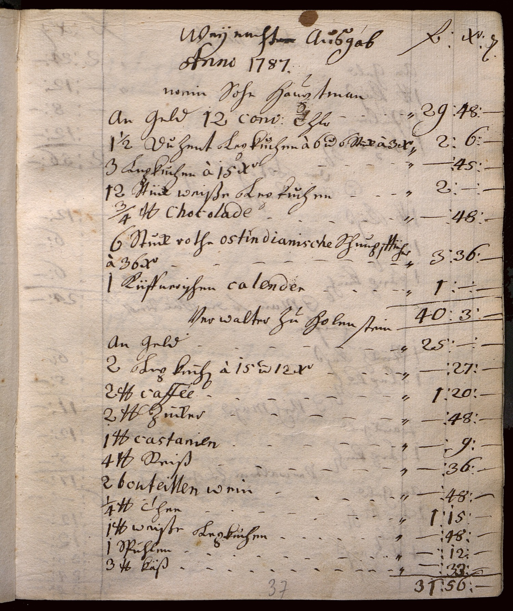

StA Nürnberg, Stromer-Archiv Akten 246, fol. 37r



Kommentar
StA Nürnberg, Stromer-Archiv Akten 246, fol. 37r
Haushalts-Ausgabebuch, 1787
Haushalts-Ausgabebuch, 1787
Archivaliengattung: Amtsbuch
Schwierigkeitsgrad: mittel
Schreiberhände:
- (unbekannt) (S1)
- jüngere Paginierung mit Bleistift (S2)
Im Haushalts-Ausgabebuch der Sophie Maria Haller, geb. Nützel, verw. Paumgartner, sind u.a. die Ausgaben für Weihnachtsgeschenke an Verwandte, Freunde und Bedienstete aufgelistet. Hier wird die erste von 12 Seiten mit Einträgen zu Weihnachten 1787 gezeigt.
Die Geschenkeliste ist in Kurrent geschrieben, enthält aber viele Begriffe mit fremdsprachigen Ursprung in humanistischer Kursive, zudem viele Ziffern und Kürzel für „Kreuzer“ (X(e)r(Textzitat)) und „Pfund“ (l(i)b(ra)(Textzitat)).
Die Kurrentschrift weist verschiedene typische Ligaturen auf (ck(Textzitat), ff(Textzitat), sch(Textzitat) mit verschliffenem c(Textzitat), SP(Textzitat) mit P(Textzitat) in Form des Großbuchstaben). Mittelteil und Unterlänge des p(Textzitat) sind nicht immer deutlich miteinander verbunden, wodurch der Buchstabe wie ein v(Textzitat) mit darunter gezeichnetem Kringel aussehen kann. z(Textzitat) reicht auch im Wortinneren (Z. 5: Duzent(Textzitat)) in die Oberlänge, sodass eine Unterscheidung von Klein- und Großbuchstabe nicht möglich ist.
Die Striche und Punkte, die als Zeilenfüller und zur Trennung der Spalten gesetzt wurden, wurden in Entzifferung und Transkription nicht berücksichtigt, übernommen wurden die als Platzhalter für Zahlen dienenden Striche in den hinteren drei Spalten.
Die Geschenkeliste ist in Kurrent geschrieben, enthält aber viele Begriffe mit fremdsprachigen Ursprung in humanistischer Kursive, zudem viele Ziffern und Kürzel für „Kreuzer“ (X(e)r(Textzitat)) und „Pfund“ (l(i)b(ra)(Textzitat)).
Die Kurrentschrift weist verschiedene typische Ligaturen auf (ck(Textzitat), ff(Textzitat), sch(Textzitat) mit verschliffenem c(Textzitat), SP(Textzitat) mit P(Textzitat) in Form des Großbuchstaben). Mittelteil und Unterlänge des p(Textzitat) sind nicht immer deutlich miteinander verbunden, wodurch der Buchstabe wie ein v(Textzitat) mit darunter gezeichnetem Kringel aussehen kann. z(Textzitat) reicht auch im Wortinneren (Z. 5: Duzent(Textzitat)) in die Oberlänge, sodass eine Unterscheidung von Klein- und Großbuchstabe nicht möglich ist.
Die Striche und Punkte, die als Zeilenfüller und zur Trennung der Spalten gesetzt wurden, wurden in Entzifferung und Transkription nicht berücksichtigt, übernommen wurden die als Platzhalter für Zahlen dienenden Striche in den hinteren drei Spalten.
Entzifferung
(Absatz Beginn)
| 2 Anno(Wechsel des Schriftsystems) 1787. | |||
| 3 mein Sohn Hauptman | |||
| 4 An Geld 12 conv(entions) (Wechsel des Schriftsystems) Th(a)l(e)r | 29 | 48 | – |
| 5 1 ½ Duzent Lepkuchen à 6 u(nd) 6 Stück à 3 X(er) | 2 | 6 | – |
| 6 3 Lepkuchen à 15 X(e)r | – | 45 | – |
| 7 12 Stück weiße Lepkuchen | 2 | – | – |
| 8 ¾ l(i)b(ras) Chocolade(Wechsel des Schriftsystems) | – | 48 | – |
| 9 6 Stuck rothe ostindianische(Wechsel des Schriftsystems) Schnupfftücher | |||
| 10 à 36 X(e)r | 3 | 36 | – |
| 11 1 Küffnerischen calender(Wechsel des Schriftsystems) | 1 | – | – |
| 12 Verwalter zu Holenstein | 40 | 3 | – |
| 13 An Geld | 25 | – | – |
| 14 2 Lepkuchen à 15 u(nd) 12 X(e)r | – | 27 | – |
| 15 2 l(i)b(ras) caffée(Wechsel des Schriftsystems) | 1 | 20 | – |
| 16 2 l(i)b(ras) zucker | – | 48 | – |
| 17 1 l(i)b(ram) castanien(Wechsel des Schriftsystems) | – | 9 | – |
| 18 4 l(i)b(ras) Reiß | – | 36 | – |
| 19 2 bouteillen(Wechsel des Schriftsystems) wein | – | 48 | – |
| 20 ¼ l(i)b(ram) Thee | 1 | 15 | – |
| 21 1 l(i)b(ram) weiße Lepkuchen | – | 48 | – |
| 22 1 SPuhlen | – | 12 | – |
| 23 3 l(i)b(ras) Käß | – | 33 | – |
| 24 (jüngere Paginierung mit Bleistift:) 37 | ((unbekannt):) 31 | 56 | – |
Transkription
(Absatz Beginn)
| 2 anno(Wechsel des Schriftsystems) 1787 | |||
| 3 mein sohn hauptman | |||
| 4 an geld 12 conventions(Wechsel des Schriftsystems)thaler | 29 | 48 | – |
| 5 1 ½ duzent lepkuchen à 6 und 6 stück à 3 x. | 2 | 6 | – |
| 6 3 lepkuchen à 15 x. | – | 45 | – |
| 7 12 stück weiße lepkuchen | 2 | – | – |
| 8 ¾ lb. chocolade(Wechsel des Schriftsystems) | – | 48 | – |
| 9 6 stuck rothe ostindianische(Wechsel des Schriftsystems) schnupfftücher | |||
| 10 à 36 x. | 3 | 36 | – |
| 11 1 küffnerischen calender(Wechsel des Schriftsystems) | 1 | – | – |
| 12 verwalter zu Holenstein | 40 | 3 | – |
| 13 an geld | 25 | – | – |
| 14 2 lepkuchen à 15 und 12 x. | – | 27 | :– |
| 15 2 lb. caffée(Wechsel des Schriftsystems) | 1 | 20 | – |
| 16 2 lb. zucker | – | 48 | – |
| 17 1 lb. castanien(Wechsel des Schriftsystems) | – | 9 | – |
| 18 4 lb. reiß | – | 36 | – |
| 19 2 bouteillen(Wechsel des Schriftsystems) wein | – | 48 | – |
| 20 ¼ lb. thee | 1 | 15 | – |
| 21 1 lb. weiße lepkuchen | – | 48 | – |
| 22 1 spuhlen | – | 12 | – |
| 23 3 lb. käß | – | 33 | – |
| 24 (jüngere Paginierung mit Bleistift:) 37 | ((unbekannt):) 31 | 56 | – |